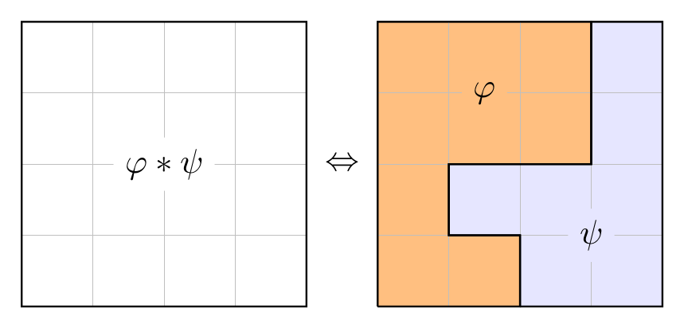

I'm a Research Associate in Programming Principles, Logic & Verification at the University of Oxford, working with Christoph Haase in his ERC project ARiAT. Previously, I was a PhD student at LSV (ENS Paris-Saclay) under the supervision of Stéphane Demri and Étienne Lozes (i3S).
Below, you will find a summary of current and past projects.
WARNING: this website is a work in progress.
|  |
Separation logic is a mathematical formalism for reasoning about pointer programs. Among the various features of this logic, reachability predicates have a special status, as they allow to express crucial properties of the memory such as acyclicity and garbage-freedom. In this project, we study the complexity and expressiveness of separation logics featuring reachability predicates. |
TODO
TODO